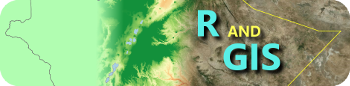

Most of the activities listed here are workshops organized either in the context of research projects or as voluntary teaching activities.
2018-09-03 Nairobi, Kenya
Introduction to the use of relational databases for the storage of quantitative data with special emphasis to the handling of time as variable. The workshop activities applied the software Base of the LibreOffice suite and its connection to R. This activity was included within the activities of a summer school organised in the context of the project Future Rural Africa.
2018-03-20 Kampala, Uganda
Workshop organized at the Makerere University in Kampala, Uganda, and founded by the German Academic Exchange Service (DAAD).

2017-11-27 Haramaya, Ethiopia
Workshop about R applications dealing with spatial data (GIS) and organized within the activities of the project ARBONETH.
2017-03-09 Freiburg im Breisgau, Germany
This workshop was offered during the 16th Meeting on Vegetation Databases and includes an introduction to the packages taxlist and vegtable.
2016-11-18 Addis Ababa, Ethiopia
A very quick introduction on the use of relational models (relational databases) for the storage of vegetation data. This activity was organized in the context of the project ARBONETH.
2015-11-09 Addis Ababa, Ethiopia
Workshop about R applications dealing with spatial data (GIS) and organized within the activities of the project ARBONETH.